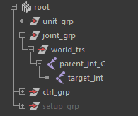
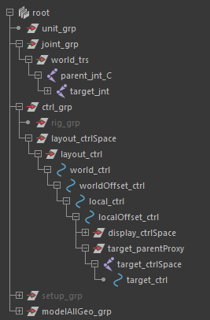
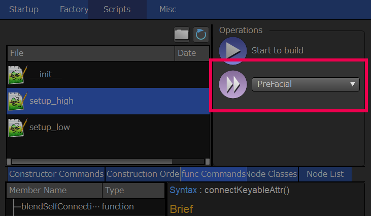
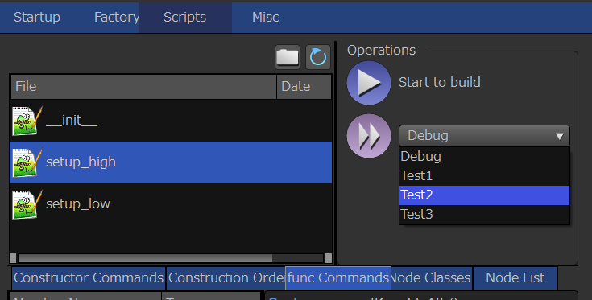
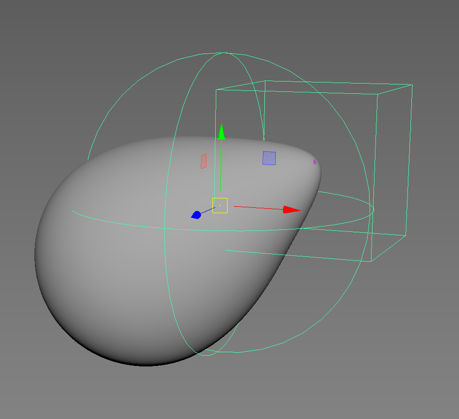
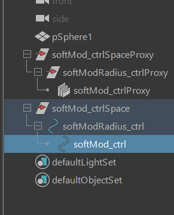
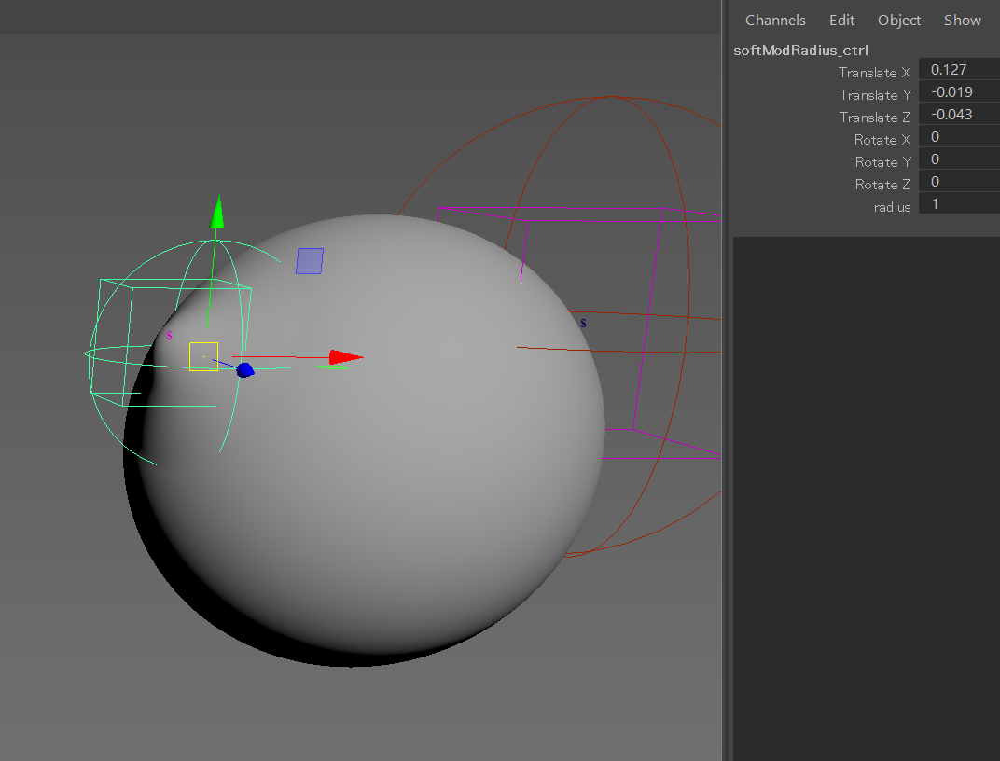

ファクトリーのスクリプティングガイド¶
この章ではスクリプトによるファクトリーのセットアップを行う際に、知っておくと便利な機能やコマンドの説明を行います。
Factoryを起動する¶
ファクトリーのGUIを起動するには以下のコマンドを実行します。
import gris3
gris3.showFactory()
showFactory関数には引き数を渡すことが出来ます。
引き数 |
型 |
説明 |
directoryPath |
str |
プロジェクトディレクトリのパス |
assetName |
str |
アセット名 |
assetType |
str |
アセットタイプ |
project |
str |
プロジェクト名 |
isDockable |
bool |
ドッキング可能かどうか |
forceUpdate |
bool |
強制的にGUIの更新をかけるかどうか |
directoryPath¶
この引き数を指定すると、指定されたパスをプロジェクトとして設定した状態でFactoryを起動します。
assetName、assetType、project¶
この引き数はそれぞれアセット名、アセットの種類、プロジェクト名を指定した状態でFactoryを起動します。これら設定は引き数directoryPathが示すパスがプロジェクトディレクトリとして設定されていない場合のみ有効で、Factory起動後のStartup画面で自動的にこれら情報が入力された状態で開始されます。
nodeモジュール¶
nodeモジュールはMayaのノードを操作する上で、cmdsよりも利便性を強化した機能を提供します。nodeモジュールによる操作はPymel的な、いわゆるオブジェクト指向的な操作を提供します。
nodeモジュールを試してみる¶
試しにnodeモジュールを試してみましょう。まずはnodeモジュールをimportします。
機能を使用するには何種類かのアプローチ方法が存在しますので、必用な時に確認してみて下さい。
アトリビュートの値にアクセスする¶
まずはノードを作成しオブジェクト化を行い、アトリビュートの値にアクセスしてみましょう。
アトリビュートにアクセスするには、作成したオブジェクトに対し
オブジェクト('アトリビュート名')
で値を取得、
オブジェクト('アトリビュート名', 値)
で値を設定します。
1 2 3 4 5 6 7 8 9 10 | from gris3 import node
trs = node.createNode('transform', n='nullA')
# アトリビュートの変更。
trs('translateX', 10)
# アトリビュートの値を取得する。
trs_values = trs('translate')[0]
# アトリビュートを再度変更。
trs('translateY', trs_values[0])
|
また、値の取得、値の設定はそれぞれcmds.getAttrやcmds.setAttrの引数を使用する事もできます。
1 2 3 4 5 6 | from gris3 import node
trs = node.createNode('transform', n='nullA')
# アトリビュートのロック状態の参照。
trs('translateX', l=True)
# Result: False #
|
またmatrixなどをsetAttrする場合はtypeオプションで'matrix'を指定する必用があります。オブジェクト化したノードにmatrixを設定する場合、同様の処理をする必用があります。
1 2 3 4 5 6 7 8 | from gris3 import node
decmtx = node.createNode('decomposeMatrix')
matrixlist = [
1, 0, 0, 0, 0, 1, 0, 0, 0, 0, 1, 0, 10, 8, 2.5, 0,
]
# matrix型はtypeオプションの指定が必用。
decmtx('inputMatrix', matrixlist, type='matrix')
|
アトリビュートをオブジェクト化する¶
ノードをオブジェクト化するように、アトリビュートもオブジェクト化できます。アトリビュートをオブジェクト化するには、ノードオブジェクトのattrメソッドを使用します。
1 2 3 4 5 6 7 8 9 10 11 | from gris3 import node
trs = node.createNode('transform', n='nullA')
# アトリビュートのロック状態の参照。
attr = trs.attr('tx')
attr.attrName() # アトリビュート名を取得
# Result: translateX #
attr.set(10) # 値を設定
attr.get() # 値を取得
# Result: 10.0 #
|
この機能は、通常設定・取得する場合にはあまり有効ではなく、前述のアトリビュートの値にアクセスするの方が簡単です。しかし後述するコネクションを作成するやコネクションをを解除するでは便利な機能が備わっています。
階層を持つアトリビュートを操作する¶
またtranslateやrotateのような子階層を持つアトリビュートにまとめてアクセスるには、アトリビュートオブジェクトの頭に「~」をつけます。
1 2 3 4 5 6 7 8 9 10 11 12 13 14 | from gris3 import node
trs = node.createNode('transform', n='nullA')
# translateX, translateY、translateZをまとめて取り扱うオブジェクト
translate = ~trs.attr('t')
# ３つの値をまとめて設定。
translate.set(2, 4, 1)
# ３つの値をまとめて取得。
translate.get()
# Result: [2.0, 4.0, 1.0] #
# for文を使用して個別のアトリビュートにアクセスする。
for t in translate:
print('%s : %s' % (t.attrName(), t.get()))
|
「~」を使用して取得する、子アトリビュートをまとめて取り扱うこのオブジェクトは、アトリビュートオブジェクトをまとめて操作するnode.ChildAttributesです。このオブジェクトはイテレーターであり、前述のサンプルコードのようにfor文でを使用する事により個別のアトリビュートを参照する事ができます。
コネクションを作成する¶
アトリビュート同士を接続する場合はアトリビュートオブジェクトを作成し、アトリビュートオブジェクトどうしを「>>」を使用してつなぎます。
1 2 3 4 5 6 | from gris3 import node
trsA = node.createNode('transform', n='nullA')
trsB = node.createNode('transform', n='nullB')
# nullAのtranslateXをnullBのtranslateYへ接続。
trsA.attr('tx') >> trsB.attr('ty')
|
つなぐ場合、片方がアトリビュートオブジェクトであれば、もう片方は文字列でも問題ありません。
1 2 3 4 5 6 7 8 9 | from gris3 import node
trsA = node.createNode('transform', n='nullA')
trsB = node.createNode('transform', n='nullB')
# nullAのtranslateXをnullBのtranslateYへ接続。
trsA.attr('tx') >> trsB+'.ty'
# nullAのtranslateXをnullBのtranslateZへ接続。
trsA+'.tx' >> trsB.attr('tz')
|
また>>でつなぐ右辺をリストにすると、まとめて接続できます。
1 2 3 4 5 6 | from gris3 import node
trsA = node.createNode('transform', n='nullA')
trsB = node.createNode('transform', n='nullB')
# nullAのtranslateXをnullBのtranslateYとZへ接続。
trsA.attr('tx') >> [trsB+'.ty', trsB.attr('tz')]
|
**「~」を使用したChildAttributesオブジェクトもリスト扱いですので、子アトリビュート全てに接続する事ができます。またChildAttributesどうしの場合は、子アトリビュートどうしが接続されます。
1 2 3 4 5 6 7 8 9 | from gris3 import node
trsA = node.createNode('transform', n='nullA')
trsB = node.createNode('transform', n='nullB')
# nullAのtranslateXをnullBのtranslateX、Y、Zへ接続。
trsA.attr('tx') >> ~trsB.attr('t')
# rotateX、Y、Zどうしを接続する。
~trsA.attr('r') >> ~trsB.attr('r')
|
コネクションをを解除する¶
コネクションを解除するにはアトリビュートオブジェクトのdisconnectメソッドを使用します。
1 2 3 4 5 6 7 8 9 10 | from gris3 import node
trsA = node.createNode('transform', n='nullA')
trsB = node.createNode('transform', n='nullB')
# nullAのtranslateXをnullBのtranslateX、Y、Zへ接続。
trsA.attr('tx') >> ~trsB.attr('t')
trsA('t', (10, 10, 10))
# 接続を解除する。
trsB.attr('tx').disconnect()
|
引数にTrueを設定すると元の値を維持した状態で接続を解除できます。ただしコネクションを解除した段階で元の値が残るかどうかはアトリビュートによるため、translateのようにデフォルトの挙動が接続解除時に値を残すタイプの場合は影響がありません。
ノードを作成しオブジェクト化する¶
cmds.createNodeの代わりに使用する事により、作成されたノードをオブジェクトとして操作できるようになります。
1 2 | from gris3 import node
trs = node.createNode('transform', n='nullA')
|
node.createNodeの引数はcmds.createNodeと同じです。
選択ノードをオブジェクト化する¶
node.selectedコマンドを使用することのより、選択ノードをオブジェクトとして操作できるようになります。
1 2 3 4 | from maya import cmds
from gris3 import node
cmds.select('persp', 'side', 'top', r=True)
selected_nodes = node.selected()
|
node.selectedの引数にはcmds.lsと同じものが使用できます。
asObject、toObjectsを使用する¶
node.asObject('オブジェクト名')
とすると既存のノードをオブジェクト化します。
1 2 3 4 | from maya import cmds
from gris3 import node
trs_name = cmds.createNode('transform', n='normalNode')
trs = node.asObject(trs_name)
|
また、オブジェクト名のリストからも変換する事ができます。変換するには
node.toObjects(['オブジェクトA', 'オブジェクトB', 'オブジェクトC', ...])
を使用します。
1 2 3 4 5 6 | from maya import cmds
from gris3 import node
trs_names = []
for i in range(20):
trs_names.append(cmds.createNode('transform', n='normalNode%s'%i))
trslist = node.toObjects(trs_names)
|
注釈
オブジェクト化する対象が存在しない場合、戻り値はNoneになります。
1 2 | from gris3 import node
node.asObject('otameshi_name') #Noneが返ってくる
|
mayaの既存コマンドのラッパーから変換する¶
cmds.createNode、cmds.lsのように、mayaの既存コマンドのラッパーコマンドを使用することによりオブジェクト化する事も可能です。ラッパーコマンドは基本的に元のコマンドと同じ引数を使用できます。
node.ls |
|
node.createNode |
|
node.createUtil |
createNodeと同じだが、作成されたノードはchannelBoxのヒストリに表示されない。 |
node.listRelatives |
|
node.listConnections |
|
node.sources |
node.listConnections(s=True, d=False)と同義 |
node.destinations |
node.listConnections(s=False, d=True)と同義 |
node.duplicate |
デフォルトの挙動はrrがTrueになるようになっている。rcがTrueの場合のみ、rrの操作が可能になる。 |
node.parent |
オブジェクト化したノードの扱い¶
これらのオブジェクト化したノードやアトリビュートは全てAbstractNodeStrクラスのサブクラスです。
AbstractNodeStrはstrのサブクラスであるため通常の挙動は文字列の操作と同等であり、文字列として取り扱ったり、cmdsのコマンドに混ぜても通常の文字列と同じように動作します。
1 2 3 4 5 6 7 8 9 | from maya import cmds
from gris3 import node
trs = node.createNode('transform', n='nullA')
cmds.getAttr(trs+'.tx')
# Result: 0.0 #
trs_p = node.createNode('transform', n=trs+'Proxy')
# Result: nullAProxy #
|
これらオブジェクトには特殊な内部機構を備えており、Pymel同様紐付いているノードの名前等を変更しても反映されます。
1 2 3 4 5 6 7 8 9 10 11 12 | from maya import cmds
from gris3 import node
trs = node.createNode('transform', n='nullA')
print(trs)
#>>> nullA
cmds.rename(trs, 'groupA')
print(trs)
#>>> groupA
trs_p = node.createNode('transform', n=trs+'Proxy')
# Result: groupAProxy #
|
ただしこれらの挙動はstr内部が持つ文字列が根本的に変わっているわけではなく、このオブジェクトにアクセスした際に現在のノード名を返すよう上書きされている事に由来します。そのため、一部のアクセス方法によっては元の文字列が現れる場合があります。
1 2 3 4 5 6 7 8 9 10 | from maya import cmds
from gris3 import node
trs = node.createNode('transform', n='nullA')
cmds.rename(trs, 'groupA')
cmds.ls(trs)
# Result: [] #
# ↑これはtrsの元文字列'nullA'がlsに渡されてしまうものの
# nullAはリネーム済みで存在しないため空のリストになってしまう。
|
この仕様はPythonの仕様上現在のところ改善が難しく、上記のような場合はオブジェクトの末尾に()をつけて下さい。
1 2 | cmds.ls(trs())
# Result: [u'groupA'] #
|
オブジェクトの末尾に()をつけると現在の名前の文字列が返ってくる仕様になっているため、lsのような文字列部分にアクセスするコマンドに最新の名前が渡されるようになります。
Constructorクラス¶
このクラスはリグをビルドする際に使用されるクラスです。grisのファクトリー機能によるビルドは、誤解を恐れずに言うならばConstructorを実行しているだけに過ぎません。
Constructorはユーザーが任意に作ることができるため、選択したConstructorによって挙動が変わります。
このセクションではgris標準仕様として備わっているConstructor「StandardConstructor」についての解説を行います。また、ここで紹介する機能はConstructorクラスのメソッドになりますので、各メソッド紹介の頭に付くselfはConstructorのインスタンスになります。
コントローラを作る¶
StandardConstructorにおけるコントローラ作成の基本の処理は以下のようになります。
この工程によって作成されるのはFKコントローラです。ジョイント階層に任意のジョイントを作成し(この工程の基本は手動)、それをベースとしてコントローラ階層にFKコントローラを作成し、そのコントローラからジョイントに接続してコントローラとして機能するようになります。
toController¶
任意のジョイントやトランスフォームに対応するコントローラを作成します。作成するコントローラは何も影響を及ぼさないただのtransformノードであり、この段階ではコントローラ自体は何の効力も持ちません。
作成されたコントローラはanimSetに登録されますので、基本的にコントローラを作成する際にはこのメソッドを使用するようにして下さい。
コントローラの名前は第一引数nameのうち、ノードの種類を表す文字列部分をctrlに置き換えたものになります。そのため引数nameに入れる文字列は命名規則に従ったものにする必要があります。
参考
名前のルールについては命名規則をご確認下さい。
self.toController(
name, animSetName, animSetPosition=0, option=0,
nodeType='transform', filter=function
)
name |
str |
操作対象ノード名 |
animSetName |
str |
登録するanimSetの名前 |
animSetPosition |
str/int |
animSetの位置を表す文字列 |
option |
bin |
作成オプション。後述する作成オプションについてを参照して下さい。 |
nodeType |
str |
作成されるノードの種類。基本的にはtransformかそのサブクラス。 |
filter |
function |
オプションで子ノードも含めてコントローラを作成する際に、特定のノードを弾くための関数を指定する。 |
戻り値(node.Transform)¶
戻り値は作成されたコントローラ名オブジェクト(node.Transform)です。
connectController¶
toControllerで作成したコントローラを任意のジョイントと紐付けを行います。
前述した通りtoControllerで作成されたノードはただのTransformです。
connectControllerを使用するとこのただのTransformを任意の階層まで移動し、targetとの紐付けを行います。これによりtargetはtoControllerで作成されたTransformノードによって動かされるようになり、Transformノードもコントローラとしてアニメーターが選択できるようにシェイプが追加されます。
target |
str |
操作対象ノード名。基本的にtoControllerの第1引数と同じものを入れる。 |
parent |
str |
コントローラを作成する際の親ノード名。targetの親と相対的に同じ階層になっていないとtargetの位置がずれるので注意。 |
shapeCreator |
func.PrimitiveCreator |
コントローラの形状を定義するオブジェクト |
spacers |
list |
コントローラと位置決め用オフセットノードの間に挟むスペーサー用のTransformノード名の指定を行う。 |
calcSpaces |
bool / list |
スペーサーが動いた時に、targetも反応して動くかどうかを指定する。デフォルトでは反応しない。 |
option |
bin |
作成オプション。後述する作成オプションについてを参照して下さい。 |
filter |
function |
オプションで子ノードも含めてコントローラを作成する際に、特定のノードを弾くための関数を指定する。 |
戻り値(list)¶
戻り値は紐付けされたコントローラ名と、位置決め用オフセット名を持つリストです。このリストは後述するオプションspacersによって変動し、spacesの数だけコントローラ名とオフセットの間のノード名が増えていきます。
戻り値の順番は、コントローラが必ず0番目、オフセットが最後、その間をつなぐように子階層から１～n番目まで入ります。詳細は下の例文を参考にして下さい。
1 2 3 4 5 6 7 8 9 10 11 12 | sc = self.shapeCreator()
parent = 'localOffset_ctrl'
# spacesの指定無し
self.toController('subarm_jnt_L', 'subarm', 'L')
self.connectController('subarm_jnt_L', parent, sc)
# Result: [<Transform 'subarm_ctrl_L'>, <Joint 'subarm_ctrlSpace_L'>]
# spacesの指定有り(2つ追加)
self.toController('subarm_jnt_R', 'subarm', 'R')
self.connectController('subarm_jnt_R', parent, sc, spacers=['cstPos', 'autoTrs'])
# Result: [<Transform 'subarm_ctrl_R'>, <Transform 'subarm_autoTrs_R'>, <Transform 'subarm_cstPos_R'>, <Joint 'subarm_ctrlSpace_R'>]
|
以下、重要なオプションの解説を行います。
spacers(list)¶
connectControllerを実行すると、コントローラに上階層に位置決め用のオフセットノードも一緒に作成されます。spacersに任意の名前を入れると(復数も可)、このオフセットとコントローラの間に入れた名前の数だけスペーサー用のヌルを挟むようになります。
spacers=[] |
|
spacers=['costPoint', 'autoTrs'] |
calcSpaces(bool/list)¶
このオプションはスペーサーノードを動かした時にターゲットのジョイントも動くかどうかを指定します。デフォルトはFalseになっており、スペーサーを動かしてもターゲットノードに反応はありません。
このオプションをTrueにするとスペーサーも反応するようになるほか、list型式でスペーサーの数だけboolを指定すると、任意のスペーサーだけ反応するようにする事もできます。listに入れる順番は階層の下から順になります。
1 2 3 4 5 6 7 8 9 10 11 12 | sc = self.shapeCreator()
parent = 'localOffset_ctrl'
# 全てのスペーサーに反応するようになる。
self.toController('subarm_jnt_L', 'subarm', 'L')
self.connectController('subarm_jnt_L', parent, sc, calcSpaces=True)
# 'autoTrs'、'cstPos'は反応し、'ctrlSpace'は反応しない。
self.connectController(
'subarm_jnt_R', parent, sc, spacers=['cstPos', 'autoTrs'],
calcSpaces=[True, True, False]
)
|
parentAsController¶
任意のノードを指定した階層の子にペアレントします。その際任意のノードはコントローラシェイプが追加されます。
connectControllerと違いこちらのメソッドはペアレントしつつコントローラシェイプを追加する以外には何も行いません。ですのでコントローラから任意のノードへの制御は自前で紐付ける必要があります。
controller |
str |
操作対象ノード名。Transformノードである必要があり、ペアレントされるとtrs値はリセットされる。 |
parent |
str |
コントローラをペアレントする親ノード名。 |
shapeCreator |
func.PrimitiveCreator |
コントローラの形状を定義するオブジェクト |
作成オプションについて¶
toControllerやconnectControllerには作成オプションを受け取るための引数optionがあります。オプションに渡す値によってそれぞれのメソッドの挙動が変わります。
オプションの効果については以下の通りです。
ChainCtrl |
この値を指定すると操作対象を任意のノードの子供や孫なども含める。 |
IgnoreEndCtrl |
この値を指定すると操作対象のうち末端ノードには適用しないようになる。このオプションはChainCtrlが有効の場合のみ効果を発揮する。 |
これらオプションは|を使用して複数同時に指定する事も可能です。
self.toController(
'test_jnt_C', 'test', option=self.ChainCtrl|self.IgnoreEndCtrl
)
self.connectController(
'test_jnt_C', parent, option=self.ChainCtrl|self.IgnoreEndCtrl
)
各種ルートを作成する¶
コントローラやリグを格納するグループを作成するためのメソッドを紹介します。これから紹介するメソッドは基本的な仕組みはまったく同じで、作成される場所が変わるようになります。
createCtrlRoot
createRigRoot
createSetupRoot
また同じ引数は同じですがデフォルト値が違う場合もありますので、引数の詳細については各コマンドのリストをご覧下さい。
これらコマンドは、作成するコントローラやリグなどの親を作成する場合に使用します。最も分かりやすい例で言えば、ユーザーが任意で作成したジョイントにFKコントローラを作成する場合などが挙げられます。
{kind=link}
例えば上手のtarget_jntにFKコントローラをつけたい場合は以下のような記述を行います。
1 2 3 4 | sc = self.shapeCreator()
ctrl_root = self.createCtrlRoot('target', parentJoint='parent_jnt_C')
self.toController('target_jnt', 'testCtrl')
self.connectController('target_jnt', ctrl_root, sc)
|
するとコントローラ階層であるlocalOffset_ctrlの直下にparent_jnt_Cの代理ノードが作成され、parent_jnt_Cと相対的に同じ動きをするようになります。その下にコントローラを作成する事により、target_ctrlとtarget_jntが相対的に同じ階層になり、コントローラとジョイントの動きがリンクするようになります。
{kind=link}
ルートの種類¶
各コマンドによって作成されるグループはそれぞれ以下の階層の子に配置されます。
作成に使用するコマンド |
階層名 |
概要 |
createCtrlRoot |
localOffset_ctrl |
コントローラを格納するグループ。 ctrl_grp階層にいるlocalOffset_ctrlの直下に作成される。 |
createRigRoot |
rig_grp |
ジョイントやコントローラを動かすための仕組みを格納するグループ |
createSetupRoot |
setup_grp |
スキニングやデフォーマー等の変形を要する仕組みを格納するグループ |
各コマンドによって作成されるグループは第一引数に渡した文字列に、規定の文字列が追加されたものが作成されます。作成される名前については後述するデフォルト値一覧のnameセクションをご覧下さい。
引数parentJointとisFollow¶
parentJointはデフォルトではNoneになっており、グループは原点に作成されます。parentJointに任意のジョイントを指定すると、作成されるグループはジョイントと同じ位置に作成されます。
注釈
任意のジョイントはjoint_grp下のいずれかである必要があります。
またisFollowはparentJointで指定したジョイントに追従するかどうかを設定します。この引数がTrueの場合、作成されたグループはparentJointに拘束されます。
デフォルト値一覧¶
name |
デフォルト値無し。作成されるグループ名は name+'Ctrl_parentProxy(_P)' |
position |
0 |
parentJoint |
None |
isFollow |
True |
isReuse |
False |
name |
デフォルト値無し。作成されるグループ名は name+'Rig_grp(_P)' |
position |
0 |
parentJoint |
None |
isFollow |
False |
isReuse |
False |
name |
デフォルト値無し。作成されるグループ名は name+'Setup_grp(_P)' |
position |
0 |
parentJoint |
None |
isFollow |
False |
isReuse |
False |
重要ノードを取得する¶
リグの構造内に存在する重要ノードにアクセスするためのメソッドを紹介します。名前決め打ちで取得するよりも、こちらのメソッドを介して取得することをオススメしています。
root() |
grisNode.GrisRoot |
ルートノードを取得する |
ctrlGroup() |
grisNode.CtrlGroup |
コントローラを保持するトップノードを返す。 |
ctrlTop() |
node.Transform |
コントローラのトップ(全てのコントローラのトップ)を返す。 |
ctrlGroup().displayCtrl() |
node.Transform |
表示制御用のコントローラを返す。 |
root().baseJointGroup().worldTransform() |
node.Transform |
ジョイント階層のトップノードを返す。 |
rigGroup() |
node.Transform |
リグのグループトップを返す。 |
setupGroup() |
grisNode.SetupGroup |
セットアップ用データを格納するグループを返す。 |
modelGroup() |
node.Transform |
レンダリングジオメトリを格納したグループノードを返す。 |
デバッグモード¶
ビルドする際、通常の実行モードの他にデバッグモードでビルドすることもできます。
デバッグモードでは
debugModeメソッドの戻り値に任意の文字列が返ってくるようになる。
isDebugModeメソッドの戻り値がTrueになる。（通常の実行モードではFalse）
という変更が起こります。
デバッグの使い方¶
デバッグモードはGUIのDebugボタンを押すことにより実行します。
{kind=link}
Debugボタンの横にはデバッグモードの種類が一覧として出ています。デフォルトではDebugのみです。
この一覧を増やす場合はConstructorクラスのクラス変数DebugModeListを上書きします。
1 2 3 4 5 | from gris3 import constructors, func, node
mainModule = constructors.mainModule(__name__, True)
class Constructor(mainModule.Constructor):
DebugModeList = ['Test1', 'Test2', 'Test3']
|
クラスの変数を上書きした状態で、そのモジュールをFactoryのScript一覧から選択すると、Debugボタンの横の一覧の種類が増えます。
{kind=link}
一覧からデバッグの種類を選択し、Debugボタンを押します。するとConstructorの中でdebugModeメソッドを呼ぶと、戻り値が一覧から選択した内容を返すようになります。
1 2 3 4 5 6 7 8 9 10 | from gris3 import constructors, func, node
mainModule = constructors.mainModule(__name__, True)
class Constructor(mainModule.Constructor):
DebugModeList = ['Test1', 'Test2', 'Test3']
def preSetupForLod(self):
if self.debugMode() == 'Test1':
# 戻り値が一覧から選択した内容になる。
print('Debug mode : Test1')
|
あとはif文などで振り分けて、その状況に応じた任意の内容を記述します。
funcモジュール¶
このモジュールはリギングする上で便利な関数などを提供します。このセクションでは代表的な便利関数の紹介を行います。
階層構造に関する関数¶
listNodeChain¶
任意の2つのトランスフォームノードが親子の時、その2つの階層間のノードを全てリストします。第2引数で指定するトランスフォームノードは第1引数の子である必要があります。
1 2 3 4 5 6 7 8 9 | from gris3 import node, func
parent = None
joints = []
for i in range(10):
parent = node.createNode('joint', p=parent)
joints.append(parent)
parent('tx', 5)
func.listNodeChain(joints[1], joints[5])
# Result: [<Joint 'joint2'>, <Joint 'joint3'>, <Joint 'joint4'>, <Joint 'joint5'>, <Joint 'joint6'>] #
|
listLength¶
listLengthRatio¶
listSingleChain¶
アトリビュートのコネクションを操作する関数¶
fConnectAttr¶
transferConnection¶
srcNodeAttrに接続しているアトリビュートをdstNodeAttrへ接続しなおします。keepConnectionがFalseの場合、srcNodeAttrへの接続は解除します。
replaceConnectionsに似ていますが、こちらはアトリビュート単位で接続しなおします。
replaceConnections¶
srcNodeのコネクションをdstNodeにつなぎ直し、srcNodeのコネクションは開放します。srcNodeに接続されているアトリビュート名と同じ名前のアトリビュートをdstNodeから探し接続するため、srcNodeとdstNodeは互換性のあるノードが望ましいです。
setAttrFromConnected¶
connectKeyableAttr¶
connectMultAttr¶
makeDecomposeMatrixConnection¶
decomposeMatrixノードをtargetsに接続します。targetsはtransformノードのリストである必要があります。
from gris3 import func, node
decmtx = node.createUtil('decomposeMatrix')
trs = node.createNode('transform')
func.makeDecomposeMatrixConnection(decmtx, [trs])
デフォーマーを追加する¶
wrap¶
localWrap¶
createSculptDeformer¶
この関数はメッシュにsculptDeformerを適用し、それを制御するためのTransformノードもセットで作成します。
下記サンプルコードではポリゴン球を作成し、その球にscrulptDeformerを適用しています。
SoftModificationのようなコントローラなどがセットになっている機構を提供するわけではありません。
1 2 3 4 5 6 7 8 | from gris3 import func
from maya import cmds
# 操作対象となるノードを作成。
target = cmds.polySphere(r=1, sx=128, sy=128, ax=(0, 1, 0), cuv=2, ch=0)[0]
# デフォーマーとコントローラを作成。
sd = func.createSculptDeformer(target, 'pushed', 'C')
sd[0]('t', (0.5, 0.5, 0.0))
sd[2]('s', (0.6, 0.6, 0.6))
|
{kind=link}
SoftModification¶
このクラスはメッシュにsoftModificationデフォーマーと、それを制御するためのコントローラを作成するための機能を提供します。
{kind=link}
作成する¶
使用するにはクラスをインスタンスし、操作対象となるメッシュに対してcreateWithControllerSystemメソッドを使用します。
1 2 3 4 5 6 7 8 9 | from gris3 import func
from maya import cmds
# 操作対象となるノードを作成。
target = cmds.polySphere(r=1, sx=128, sy=128, ax=(0, 1, 0), cuv=2, ch=0)[0]
# デフォーマーとコントローラを作成。
smod = func.SoftModification()
smod.createWithControllerSystem(target)
# Result: {'controllers': [<Transform 'softMod_ctrl'>, <Transform 'softModRadius_ctrl'>, <Transform 'softMod_ctrlSpace'>], 'proxies': [u'softMod_ctrlProxy', <Transform 'softModRadius_ctrlProxy'>, <Transform 'softMod_ctrlSpaceProxy'>]} #
|
コマンドを実行するとsoftModのデフォーマーを対象ノードに作成し、それを制御するためのコントローラと代理ノードが作成され、createWithControllerSystemの戻り値として返ってきます。
{kind=link}
コントローラの位置を編集する¶
コントローラとその代理ノードは対になっています。ctrlSpaceProxyとctrlSpaceを同じ位置に移動する事により、コントローラの初期位置を変更する事ができます。
{kind=link}
また、作成する際にsetRadiusScaleを使用すると、デフォルトの影響範囲を変更する事ができます。
1 2 3 4 5 6 7 8 9 | from gris3 import func
from maya import cmds
# 操作対象となるノードを作成。
target = cmds.polySphere(r=1, sx=128, sy=128, ax=(0, 1, 0), cuv=2, ch=0)[0]
# デフォーマーとコントローラを作成。
smod = func.SoftModification()
smod.setRadiusScale(0.5)
smod.createWithControllerSystem(target)
|
{kind=link}
このようにsoftModRadius_ctrlのradiusは１のままですが、半径が0.5に小さくなっているのがわかります。
作成時の名前を操作する¶
デフォルトのままでは特定の名前になってしまいますが、以下のメソッドを使用すると任意の名前に変更する事ができます。
メソッド名 |
型 |
説明 |
setBaseName |
str |
コントローラのベースとなる名前を設定する |
setPosition |
str |
コントローラの位置を表す文字列を指定する |
下記のコードではポリゴン球を作成し、左右にデフォルト半径が異なるコントローラを2つ作成しています。
1 2 3 4 5 6 7 8 9 10 11 12 13 14 15 16 17 | from gris3 import func
from maya import cmds
# 操作対象となるノードを作成。
target = cmds.polySphere(r=1, sx=128, sy=128, ax=(0, 1, 0), cuv=2, ch=0)[0]
# デフォーマーとコントローラを作成。
smod = func.SoftModification()
smod.setBaseName('sphere')
for p_label, pos, radius in [
('L', (0.8, 0.8, 0), 0.5), ('R', (-1.0, 0.5, 0), 1.2)
]:
smod.setPosition(p_label)
smod.setRadiusScale(radius)
ctrls = smod.createWithControllerSystem(target)
# コントローラと代理ノードの位置を調整
for part in ('controllers', 'proxies'):
ctrls[part][-1]('t', pos)
|
{kind=link}